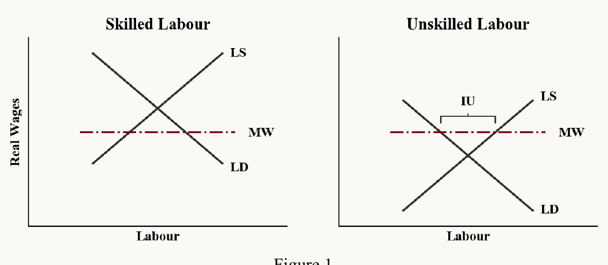
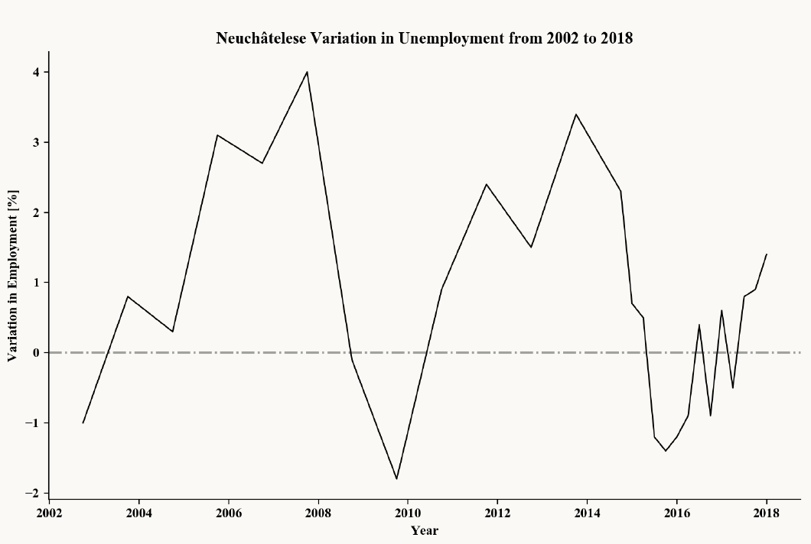

An Economic Overview of the Minimum Wage Debate in the Context of Neuchâtel, Switzerland
Joonas Mikael Vättö · 22 November 2018PDF
Introduction
The grand debate ravaging around the issue of the feasibility of a minimum wage in a modern market economy has been at the forefront of economic research for the past century1. The canton of Neuchâtel decided to bring said debate once more to the forefront of Swiss economic dialectic by introducing a minimum wage in its dominion in the summer of 2017. This resulted in a varia of reactions, ranging from despair by business syndicalists to the rejoicing of low-skill labourers2. Understanding the predicted outcomes economically is of great interest due to the wide-ranging and unfaltering consequences it could have on the peoples of Neuchâtel and Switzerland at large.
This paper shall aim to give a rudimentary overview of some economic theories regarding minimum wage. A focus is set on the contrast to classical economic theory. Subsequently, abstract economic theories shall be contextualised in the case study of Neuchâtel and comparative analyses.
Theoretical and Empirical Foundation
Neoclassical economic theory predicts rather clearly the effects of minimum wages: were such minimum wages implemented, they would affect the economy only where they lay above the equilibrium real wage dictated by the market. There, however, they would increase involuntary unemployment by driving the marginal cost of labour up, and thereby reducing industry demand for it3. In neoclassical economic theory, minimum wages are expected to lead to negative outcomes in the market economy by and large; predominantly affecting negatively the very demographic they are designed to support – low-skilled labour – as real wages on the high-skilled labour market tend to lie above the minimum real wage. Refer also to Figure 1 for a graphical derivation of the neoclassical argument.

A contrarian to the Neoclassical argument manifests itself in the Keynesian analysis of the labour market. In Keynesian theory, macroeconomic aggregate demand is the main driver for economic growth, whilst the labour market plays but a secondary role in shaping the economic development. The main insight from Keynesian theory stems from its argumentation that minimum wages, which are negotiated nominally, have no effect on the real wage in the medium term. This is due to a raising of prices on the goods market due to higher marginal production costs. Another side effect is an increase in inflationary pressures4, which are higher if nominal wages are increased swiftly. Therefore, minimum wages should be continually increased in order to lead to adequate income distribution-shifting effects, which may be desired for increased stability5. These should be increased according to a nominal wage function – also referred to as wage norm –, given as follows6:
Here w is the nominal wage, π the median productivity function, and i the desired inflation target set by the central bank. In Keynesian theory, disemployment effects are ambiguous and vary case by case. This is because the effects of minimum wages are two-fold: (1) they increase aggregate demand on the goods market by increasing purchasing power through changes in income distribution of low-skilled labourers, who have been found to spend a higher share of their income than high-skilled labourers. In Keynesian analyses, aggregate demand is the main driver of economic growth, whereby an increase in such would lead to higher output and labour demand; and (2) they increase marginal production costs, leading businesses to search for alternative technology solutions to reduce costs and thus decrease demand for labour. These two effects are counteracting, due to which the effects of minimum wages depend on the specific constellation of the market.
Other major economic theories, such as what has been7 coined DKLR Theory, Modern Monetary Theory, Austrian Theory, and Neomarxist Theory8 further stray from the Neoclassical paradigm. However, due to project limitations, these shall not be further elaborated upon here.
The empirical evidence on structural effects of minimum wages is divided. Empirical, social scientific research on the effects of minimum wages on employment and inflation has been carried out since the commencement of the adjoined debate. These have delivered mixed results, some highlighting positive correlation between unemployment and minimum wages9, and others contradicting these findings by either finding no conclusive correlations, or even negative correlation10. There is therefore to current knowledge no clear relationship between minimum wages and unemployment.
Present to this study, most evidence seems to be suggesting the support of the Keynesian position, as can be seen by the increasing number of recent literature and meta-analyses finding no discernible connection between minimum wages and unemployment. It has been suggested, however, that the main negative impacts of minimum wages do not result from any direct disemployment effects but rather from their induced wage rigidity in cases of asymmetric shocks11. Due to this wage rigidity, employers are forced to rely on dismissal in cases of shocks that increase their marginal production costs. These findings are consistent with the Keynesian theory.
Recent and current strands of research aim therefore to bridge the knowledge gap regarding minimum wages by analysing other possible structural effects its introduction could entail, such as employment growth, feedback effects, and the overall effect on economic growth and aggregate demand12. The empirical research is thus far from formulating a definitive conclusion.
Case Study Neuchâtel, Switzerland
In summer of 2017, the Swiss canton of Neuchâtel introduced in its dominion minimum wage legislation, sparking controversy and another ignition of the economic debate regarding minimum wages in the Swiss public and academic elite in the process. Utilising the theoretical derivations of the previous section, the Neuchâtelese introduction of minimum wages shall be evaluated for its economic feasibility.
Minimum wage legislation in Neuchâtel dictated that the minimum wage be introduced in 2017 at CHF 19.70 per hour, whilst being gradually increased in liaison with a nationwide index of consumer prices13. This has resulted in a first increase in minimum wages from 2017 to 2020 to CHF 20.02 per hour. This aspect of the legislation is thus in accordance with the Keynesian demand for the nominal wage function to ensure the desired income distribution realignment in the medium term.

As can be seen in Figure 2, employment changes in Neuchâtel since the introduction of minimum wage legislation have been consistent with normal fluctuations of the past two decades. Though there has been an increase in employment since summer of 2017, there is no significant correlation to be found in Neuchâtel between employment and minimum wage legislation in the short term. Further, the canton’s economic output, as a measure of Gross Domestic Product, remains stable comparatively to the rest of Switzerland14.
Realignment effects in income distribution may be the most significant outcome in the case of Neuchâtel. It has been found that whilst the phenomenon of the working poor in Switzerland is still fairly contained when compared internationally, in said working poor demographics in Switzerland as a whole lowly qualified labourers are significantly overrepresented15. According to Keynesian theory, these very same lowskilled labourers are to benefit most from the changes in income distribution that are a result of minimum wage legislation. This may lead one to conclude that the introduction of minimum wages may significantly stifle the phenomenon of working poor in the canton of Neuchâtel.
From a living wage perspective, however, an introduction of minimum wages is not necessarily justified in Switzerland, since the median wage of even low-skilled labourers rests well above that of a living wage16. Even so, a minimum wage may still be justified on grounds of increased social cohesion and a depreciation of socioeconomic tensions by rising income disparities.
Introduction of minimum wage legislation on the subsidiary level of cantons is exceedingly more recommended than an analogous legislation on the federal level – as has been attempted in Switzerland years prior or is currently active in many OECD countries, such as Germany. This is due to the structural variance in the subsidiary economic systems. Since by Keynesian theory the effects of minimum wages always depend on these structural conditions, universal basic income legislation would ultimately fail to adapt positively for all varia of economic substructures in the federation.
Conclusion
The theoretical and empirical debate on economic implications of minimum wage legislation is far from having drawn definitive conclusions. Thus, the difficulties in holstering theory-driven evaluations of macroeconomic case studies present themselves in this regard. Most of the preliminary empirical evidence, however, seems to be supporting a Keynesian strand of economic analysis, which can serve as a terminus a quo for contemporary theory-driven evaluations.
In the case study of Neuchâtel, there seem to be few negative impacts of the minimum wage in the short term, seen by the canton’s typical employment and domestic product figures. Under nominal economic circumstances, one can thus expect the canton’s economy to remain fairly stable under a realignment of income distribution, which may lead to reductions in working poor numbers. The consequences for employment variability in the long-term remain theoretically ambiguous and empirically to be seen.
However, the main vulnerability for the canton lies not in the short- or medium-term unemployment, but rather the increased wage rigidity and structural inflexibility that it induces in cases of asymmetric shocks to the Neuchâtelese economy. Such rigidities are imperative to keep in mind and to combat structurally before an occurrence of economic shocks.
Overall, the introduction of minimum wages on the subsidiary level of cantons is superior to universal minimum wages on the federal level. As cantons have always been a testing ground for new economic policy, the case study of Neuchâtel remains open in the long-term and should be followed with great interest.
Notes
- E.g. Webb 1912, Stigler, 1946. Thomas Leonard traces the origins of the argument even further back. ↑
- For an account, see Tagesanzeiger 08.11.2017: „Zweite Chance für den Mindestlohn“. ↑
- Rigorous overviews of the neoclassical argument can be found in Herr, Kazandziska & MahnkopfPraprotnik 2009, Neumark 2014, Neumark & Wascher 2000, Kennan 1995, and Vättö 2016. The outlined analysis holds in the neoclassical theory lest for the exceptional case of monopsony, where in fact minimum wages have positive effects on the economy. For an analysis of said case, refer to Stigler 1946, and Herr, Kazandziska & Mahnkopf-Praprotnik 2009. ↑
- Cf. Tarling & Wilkinson 1985. ↑
- For the consequences of adverse wealth inequality on a polity, cf. Acemoglu & Robinson 2012. ↑
- Adaptation from Herr, Kazandziska & Mahnkopf-Praprotnik 2009 p. 8. ↑
- Cf. Leonard 2000 p. 128. Named DKLR after Dunlop-Kerr-Lloyd-Reynolds, its main proponents. ↑
- For fundamental developments in DLKR Theory, cf. Alchian 1950, Machlup 1946, Lester 1946 & 1947. For a possible modern layman’s interpretation of DKLR Theory, see Villiger 2018 p. 85. For a take from Modern Monetary Theory, cf. Cowling & Mitchell 2007. ↑
- Cf. Neumark & Wascher 2000, 2007, Brown, Gilroy & Kohen 1982, Adams & Neumark 2005. ↑
- Cf. David & Krueger 1994, Schmitt 2013, Böckerman & Uusitalo 2009, Doucouliagos & Stanley 2009, Seth 2017, Sturn 2016, Herzog-Stein et al. 2018. ↑
- Cf. Vättö 2016, Böckerman, Laaksonen & Vainiomäki 2006. ↑
- E.g. Meer & West 2013 on effects regarding employment growth. ↑
- Canton de Neuchâtel 2018: « Mémento sur le salaire minimum » p. 3. ↑
- Data Source: Swiss Federal Statistical Office. ↑
- Cf. Crettaz 2018. ↑
- Cf. Fabo & Belli 2017. ↑
Bibliography
- [1]Acemoglu, Daron & James Robinson. Why Nations Fail: The Origins of Power, Prosperity, and Poverty. Crown Publishers, New York, NY. 2012.
- [2]Adams, Scott & David Neumark. Living Wage Effects: New and Improved Evidence. Economic Development Quarterly, Volume 1, No. 1. 2005.
- [3]Alchian, Armen. Uncertainty, Evolution, and Economic Theory. Journal of Political Economy, Volume 58, Issue 3. 1950.
- [4]Brown, Charles, Curtis Gilroy & Andrew Cohen. The Effect of the Minimum Wage on Employment and Unemployment. Journal of Economic Literature, Volume 20, No. 2. 1982.
- [5]Böckerman, Petri, Seppo Laaksonen & Jari Vainiomäki. Micro-Level Evidence on Wage Rigidities in Finland. Labour Institute for Economic Research Working Papers, Number 219. 2006.
- [6]Böckerman, Petri & Roope Uusitalo. Minimum Wages and Youth Employment: Evidence from the Finnish Retail Trade Sector. British Journal of Industrial Relations Volume 47, Issue 2, Oxford. 2009.
- [7]Cowling, Sally & William Mitchell. Taking the Low Road: Minimum Wage Determination under Work Choices. Journal of Industrial Relations, Volume 49, Issue 5. 2007.
- [8]Crettaz, Eric. Working Poor in der Schweiz: Ausmass und Mechanismen. Social Change in Switzerland N°15, Lausanne. 2018.
- [9]David, Card & Alan Krueger. Minimum Wages and Employment: A Case Study of the Fast-Food Industry in New Jersey and Pennsylvania. American Economic Review, Volume 47, No. 2. 1994.
- [10]Doucouliagos, Hristos & Stanley, T. Publication Selection Bias in Minimum-Wage Research? A Meta-Regression Analysis. British Journal of Industrial Relations, Volume 47, Issue 2. 2009.
- [11]Fabo, Brian & Sharon Sarah Belli. (Un)believable wages? An analysis of minimum wage policies in Europe from a living wage perspective. IZA Journal of Labor Policy Volume 6, Issue 4. 2017.
- [12]Herr, Hansjörg, Milka Kazandziska & Silke Mahnkopf-Praprotnik. The theoretical debate about minimum wages. Global Labour University Working Papers No. 6, Berlin. 2009.
- [13]Herzog-Stein, Alexander et al. Positive Gesamtwirtschaftliche Effekte des Gesetzlichen Mindestlohns – eine ökonomische Analyse. Institut für Makroökonomie und Konjunkturforschung Report 141. 2018.
- [14]Kennan, John. The Elusive Effects of Minimum Wages. Journal of Economic Literature, Volume 33, Issue 4. 1995.
- [15]Leonard, Thomas. The Very Idea of Applying Economics: The Modern Minimum-Wage Controversy and Its Antecedents. History of Political Economy, Volume 32, Issue 5, Durham, NC. 2000.
- [16]Lester, Richard. Shortcomings of Marginal Analysis for Wage-Employment Problems. The American Economic Review, Volume 36, No.1. 1946.
- [17]Lester, Richard. Marginalism, Minimum Wages, and Labor Markets. The American Economic Review, Volume 37, No. 1. 1947.
- [18]Machlup, Fritz. Marginal Analysis and Empirical Research. The American Economic Review, Volume 36, No. 4. 1946.
- [19]Meer, Jonathan & Jeremy West. Effects of the Minimum Wage on Employment Dynamics. Journal of Human Resources, Volume 51, Issue 2, Wisconsin. 2013.
- [20]Neumark, David. Employment effects of minimum wages. IZA World of Labor 6. 2014.
- [21]Neumark, David & William Wascher. Minimum Wages and Employment: A Case Study of the Fast-Food Industry in New Jersey and Pennsylvania: Comment. The American Economic Review, Volume 90, No. 5. 2000.
- [22]Neumark, David & William Wascher. Minimum Wages and Employment: A Review of Evidence from the New Minimum Wage Research. Foundations and Trends in Microeconomics, Volume 3, No. 1+2. 2007.
- [23]Ruesga-Benito, Santos Miguel, Fernando González-Laxe & Jose Picatoste. The debate on the economic effects of minimum wage legislation. European Journal of Government and Economics, Volume 6, Issue 2. 2017.
- [24]Schmitt, John. Why Does the Minimum Wage Have No Discernible Effect on Employment? Center for Economic and Policy Research, Washington D.C. 2013.
- [25]Seth, Vijay. Economics of Minimum Wage Legislations – Lessons for Emerging Market Economies. Emerging Economy Studies, Volume 3, Issue 1. 2017.
- [26]Stigler, George. The Economics of Minimum Wage Legislation. The American Economic Review, Volume 36, No. 3. 1946.
- [27]Sturn, Simon. Do Minimum Wages Lead to Job Losses? Evidence from OECD Countries on Low-Skilled and Youth Employment. Political Economy Research Institute Working Paper Series, Number 418, Amherst, MA. 2016.
- [28]Tarling, Roger & Frank Wilkinson. Mark-up Pricing, Inflation, and Distributional Shares: a note. Cambridge Journal of Economics, Volume 9, No. 2. 1985.
- [29]Villiger, Kaspar. Demokratie: Jetzt erst recht! Politik im Zeitalter von Populismus und Polarisierung. NZZ Libro, Zürich. 2018.
- [30]Vättö, Joonas Mikael. Frozen Finances: A comparative study of two Finnish recessions and their consequences. 2016.
- [31]Webb, Sidney. The Economic Theory of a Legal Minimum Wage. Journal of Political Economy, Volume 20, Issue 10. 1912.